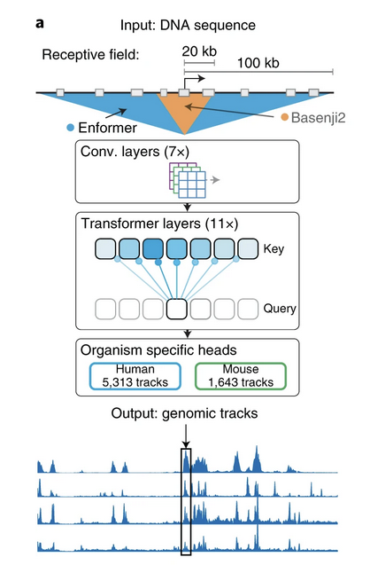
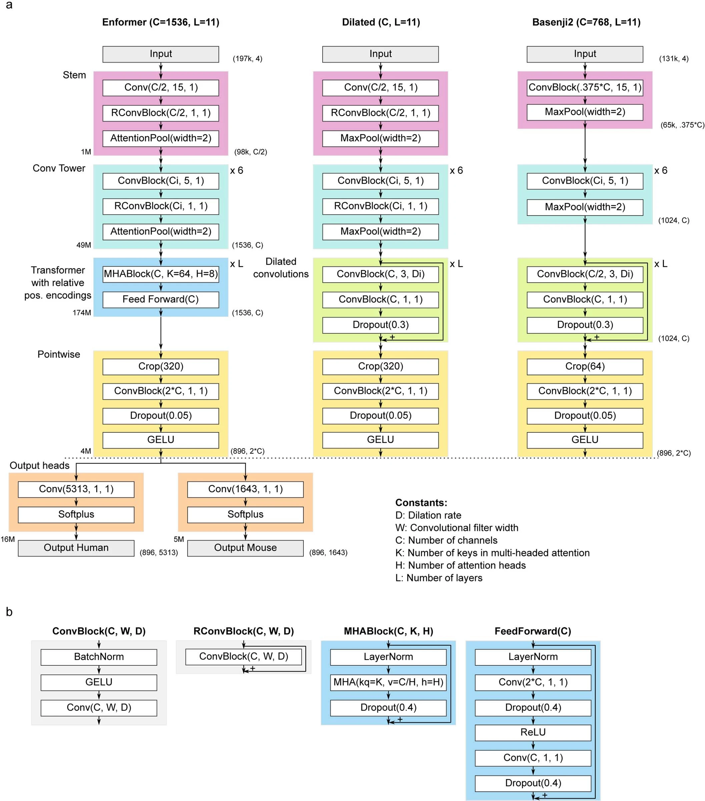

unit 03
gene46100
Slides for Unit 3 - Enformer and PrediXcan link
In this unit, we will explore the Enformer model, learn to use it to predict gene expression from DNA sequences, and see how it can be used to understand the genetic basis of complex traits.
Enformer Architecture
Summarized by cursor from enformer.py


Purpose
- Designed for effective gene expression prediction from sequence by integrating long-range interactions
- Takes DNA sequences as input and predicts gene expression patterns
Architecture Overview
1. Input Processing
- Sequence length: 196,608 base pairs
- Input format: One-hot encoded DNA sequences (ACGT)
2. Main Components
a. Stem Layer
- Initial convolutional layer
- Residual connections
- Pooling layer
b. Convolutional Tower
- Multiple convolutional blocks in series
- Channel progression: Gradually increases from channels/2 to full channels
- Block components:
- Convolutions
- Residual connections
- Pooling layers
c. Transformer
- Configuration:
- 11 transformer layers (default)
- 8 attention heads (default)
- Transformer block structure:
- Multi-head attention layer
- MLP with residual connections
- Layer normalization
d. Final Processing
- Target length cropping: 896 bins
- Final pointwise convolutions
e. Prediction Heads
- Human head: 5313 channels
- Mouse head: 1643 channels
- Each head predicts different genomic features
Key Parameters
- Channel width: 1536 (default)
- Transformer layers: 11
- Attention heads: 8
- Bin size: 128 base pairs
- Target length: 896 bins
Notable Features
- Hybrid architecture combining CNNs and transformers
- Extensive residual connections
- Sophisticated positional encoding
- GELU activation functions
- Dropout regularization
- Batch normalization in convolutional layers
Enformer class definition in tensorflow
downloaded from enformer.py annotated with gemini
```{python}
# Copyright 2021 DeepMind Technologies Limited
#
# Licensed under the Apache License, Version 2.0 (the "License");
# you may not use this file except in compliance with the License.
# You may obtain a copy of the License at
#
# http://www.apache.org/licenses/LICENSE-2.0
#
# Unless required by applicable law or agreed to in writing, software
# distributed under the License is distributed on an "AS IS" BASIS,
# WITHOUT WARRANTIES OR CONDITIONS OF ANY KIND, either express or implied.
# See the License for the specific language governing permissions and
# limitations under the License.
"""Tensorflow implementation of Enformer model.
"Effective gene expression prediction from sequence by integrating long-range
interactions"
Žiga Avsec1, Vikram Agarwal2,4, Daniel Visentin1,4, Joseph R. Ledsam1,3,
Agnieszka Grabska-Barwinska1, Kyle R. Taylor1, Yannis Assael1, John Jumper1,
Pushmeet Kohli1, David R. Kelley2*
1 DeepMind, London, UK
2 Calico Life Sciences, South San Francisco, CA, USA
3 Google, Tokyo, Japan
4 These authors contributed equally.
* correspondence: avsec@google.com, pushmeet@google.com, drk@calicolabs.com
"""
import inspect # Used for inspecting live objects, particularly for function signatures
from typing import Any, Callable, Dict, Optional, Text, Union, Iterable # Type hinting for better code readability and maintainability
import attention_module # Custom module likely containing attention mechanisms used in the model
import numpy as np # Library for numerical operations, especially array manipulation
import sonnet as snt # Deep learning library by DeepMind, often used with TensorFlow
import tensorflow as tf # The core deep learning framework
# Define constants for sequence processing
SEQUENCE_LENGTH = 196_608 # The length of the input DNA sequence the model processes
BIN_SIZE = 128 # The size of bins the output is aggregated into
TARGET_LENGTH = 896 # The target length of the output prediction
class Enformer(snt.Module):
"""Main model."""
def __init__(self,
channels: int = 1536, # Number of filters in convolutional layers and the model's dimensionality
num_transformer_layers: int = 11, # Number of transformer blocks in the model
num_heads: int = 8, # Number of attention heads in the multi-head attention mechanism
pooling_type: str = 'attention', # Type of pooling to use ('attention' or 'max')
name: str = 'enformer'): # Name of the Sonnet module
"""Enformer model.
Args:
channels: Number of convolutional filters and the overall 'width' of the
model.
num_transformer_layers: Number of transformer layers.
num_heads: Number of attention heads.
pooling_type: Which pooling function to use. Options: 'attention' or max'.
name: Name of sonnet module.
"""
super().__init__(name=name) # Initialize the parent Sonnet Module class
# pylint: disable=g-complex-comprehension,g-long-lambda,cell-var-from-loop
# Define the number of output channels for different species (heads)
heads_channels = {'human': 5313, 'mouse': 1643}
dropout_rate = 0.4 # Dropout rate used for regularization
assert channels % num_heads == 0, ('channels needs to be divisible '
f'by {num_heads}') # Ensure channels is divisible by the number of attention heads
# Configuration for the multi-head attention mechanism
whole_attention_kwargs = {
'attention_dropout_rate': 0.05,
'initializer': None,
'key_size': 64,
'num_heads': num_heads,
'num_relative_position_features': channels // num_heads,
'positional_dropout_rate': 0.01,
'relative_position_functions': [
'positional_features_exponential',
'positional_features_central_mask',
'positional_features_gamma'
], # Types of relative positional embeddings used
'relative_positions': True, # Whether to use relative positional embeddings
'scaling': True,
'value_size': channels // num_heads,
'zero_initialize': True
}
# Define the 'trunk' of the model which processes the input sequence
trunk_name_scope = tf.name_scope('trunk')
trunk_name_scope.__enter__()
# lambda is used in Sequential to construct the module under tf.name_scope.
# Helper function to create a convolutional block
def conv_block(filters, width=1, w_init=None, name='conv_block', **kwargs):
return Sequential(lambda: [
snt.distribute.CrossReplicaBatchNorm( # Batch normalization across replicas
create_scale=True,
create_offset=True,
scale_init=snt.initializers.Ones(),
moving_mean=snt.ExponentialMovingAverage(0.9),
moving_variance=snt.ExponentialMovingAverage(0.9)),
gelu, # GELU activation function
snt.Conv1D(filters, width, w_init=w_init, **kwargs) # 1D Convolutional layer
], name=name)
# The initial stem of the model
stem = Sequential(lambda: [
snt.Conv1D(channels // 2, 15), # Initial convolutional layer
Residual(conv_block(channels // 2, 1, name='pointwise_conv_block')), # Residual connection with a pointwise convolutional block
pooling_module(pooling_type, pool_size=2), # Pooling layer
], name='stem')
# List of filter sizes for the convolutional tower, exponentially increasing
filter_list = exponential_linspace_int(start=channels // 2, end=channels,
num=6, divisible_by=128)
# The convolutional tower with multiple blocks
conv_tower = Sequential(lambda: [
Sequential(lambda: [
conv_block(num_filters, 5), # Convolutional block with filter size 5
Residual(conv_block(num_filters, 1, name='pointwise_conv_block')), # Residual connection
pooling_module(pooling_type, pool_size=2), # Pooling layer
],
name=f'conv_tower_block_{i}')
for i, num_filters in enumerate(filter_list)], name='conv_tower')
# Transformer blocks
# MLP within the transformer block
def transformer_mlp():
return Sequential(lambda: [
snt.LayerNorm(axis=-1, create_scale=True, create_offset=True), # Layer normalization
snt.Linear(channels * 2), # Dense layer with expansion
snt.Dropout(dropout_rate), # Dropout
tf.nn.relu, # ReLU activation
snt.Linear(channels), # Dense layer for projection back to original dimension
snt.Dropout(dropout_rate)], name='mlp')
# Sequence of transformer blocks
transformer = Sequential(lambda: [
Sequential(lambda: [
Residual(Sequential(lambda: [
snt.LayerNorm(axis=-1,
create_scale=True, create_offset=True,
scale_init=snt.initializers.Ones()), # Layer normalization
attention_module.MultiheadAttention(**whole_attention_kwargs,
name=f'attention_{i}'), # Multi-head attention
snt.Dropout(dropout_rate)], name='mha')), # Dropout after attention
Residual(transformer_mlp())], name=f'transformer_block_{i}') # Residual connection with MLP
for i in range(num_transformer_layers)], name='transformer')
# Crop the sequence to the target length
crop_final = TargetLengthCrop1D(TARGET_LENGTH, name='target_input')
# Final pointwise convolutional layer
final_pointwise = Sequential(lambda: [
conv_block(channels * 2, 1), # Pointwise convolutional block
snt.Dropout(dropout_rate / 8), # Smaller dropout rate
gelu], name='final_pointwise') # GELU activation
# Combine all trunk modules into a single Sequential module
self._trunk = Sequential([stem,
conv_tower,
transformer,
crop_final,
final_pointwise],
name='trunk')
trunk_name_scope.__exit__(None, None, None)
# Define the output heads for different tasks/species
with tf.name_scope('heads'):
self._heads = {
head: Sequential(
lambda: [snt.Linear(num_channels), tf.nn.softplus], # Dense layer and softplus activation for output
name=f'head_{head}')
for head, num_channels in heads_channels.items()
}
# pylint: enable=g-complex-comprehension,g-long-lambda,cell-var-from_loop
@property
def trunk(self):
# Property to access the trunk module
return self._trunk
@property
def heads(self):
# Property to access the heads modules
return self._heads
def __call__(self, inputs: tf.Tensor,
is_training: bool) -> Dict[str, tf.Tensor]:
# The main call method for the model
trunk_embedding = self.trunk(inputs, is_training=is_training) # Pass input through the trunk
# Pass the trunk output through each head
return {
head: head_module(trunk_embedding, is_training=is_training)
for head, head_module in self.heads.items()
}
@tf.function(input_signature=[
tf.TensorSpec([None, SEQUENCE_LENGTH, 4], tf.float32)])
def predict_on_batch(self, x):
"""Method for SavedModel."""
# Method for making predictions, suitable for SavedModel
return self(x, is_training=False) # Call the model in inference mode
class TargetLengthCrop1D(snt.Module):
"""Crop sequence to match the desired target length."""
def __init__(self,
target_length: Optional[int],
name: str = 'target_length_crop'):
super().__init__(name=name)
self._target_length = target_length # The desired output length
def __call__(self, inputs):
# Crop the input tensor to the target length
if self._target_length is None:
return inputs
trim = (inputs.shape[-2] - self._target_length) // 2 # Calculate amount to trim from each side
if trim < 0:
raise ValueError('inputs longer than target length') # Error if input is shorter than target (shouldn't happen with valid parameters)
elif trim == 0:
return inputs # No cropping needed
else:
return inputs[..., trim:-trim, :] # Perform the symmetrical cropping
class Sequential(snt.Module):
"""snt.Sequential automatically passing is_training where it exists."""
def __init__(self,
layers: Optional[Union[Callable[[], Iterable[snt.Module]],
Iterable[Callable[..., Any]]]] = None,
name: Optional[Text] = None):
super().__init__(name=name)
if layers is None:
self._layers = []
else:
# layers wrapped in a lambda function to have a common namespace.
if hasattr(layers, '__call__'):
layers = layers()
self._layers = [layer for layer in layers if layer is not None] # Store the layers
def __call__(self, inputs: tf.Tensor, is_training: bool, **kwargs):
# Pass input sequentially through each layer, passing is_training if accepted
outputs = inputs
for _, mod in enumerate(self._layers):
if accepts_is_training(mod): # Check if the module accepts is_training argument
outputs = mod(outputs, is_training=is_training, **kwargs)
else:
outputs = mod(outputs, **kwargs)
return outputs
def pooling_module(kind, pool_size):
"""Pooling module wrapper."""
# Helper function to select the pooling module based on kind
if kind == 'attention':
return SoftmaxPooling1D(pool_size=pool_size, per_channel=True,
w_init_scale=2.0) # Use SoftmaxPooling1D
elif kind == 'max':
return tf.keras.layers.MaxPool1D(pool_size=pool_size, padding='same') # Use MaxPool1D
else:
raise ValueError(f'Invalid pooling kind: {kind}.') # Raise error for invalid pooling type
class SoftmaxPooling1D(snt.Module):
"""Pooling operation with optional weights."""
def __init__(self,
pool_size: int = 2,
per_channel: bool = False,
w_init_scale: float = 0.0,
name: str = 'softmax_pooling'):
"""Softmax pooling.
Args:
pool_size: Pooling size, same as in Max/AvgPooling.
per_channel: If True, the logits/softmax weights will be computed for
each channel separately. If False, same weights will be used across all
channels.
w_init_scale: When 0.0 is equivalent to avg pooling, and when
~2.0 and `per_channel=False` it's equivalent to max pooling.
name: Module name.
"""
super().__init__(name=name)
self._pool_size = pool_size
self._per_channel = per_channel
self._w_init_scale = w_init_scale
self._logit_linear = None # Linear layer for computing logits for softmax
@snt.once
def _initialize(self, num_features):
# Initialize the logit_linear layer once
self._logit_linear = snt.Linear(
output_size=num_features if self._per_channel else 1,
with_bias=False, # Softmax is agnostic to shifts.
w_init=snt.initializers.Identity(self._w_init_scale)) # Initialize with an identity matrix scaled
def __call__(self, inputs):
# Perform softmax pooling
_, length, num_features = inputs.shape
self._initialize(num_features)
inputs = tf.reshape(
inputs,
(-1, length // self._pool_size, self._pool_size, num_features)) # Reshape for pooling
return tf.reduce_sum(
inputs * tf.nn.softmax(self._logit_linear(inputs), axis=-2),
axis=-2) # Weighted sum based on softmax of learned logits
class Residual(snt.Module):
"""Residual block."""
def __init__(self, module: snt.Module, name='residual'):
super().__init__(name=name)
self._module = module # The module to apply within the residual block
def __call__(self, inputs: tf.Tensor, is_training: bool, *args,
**kwargs) -> tf.Tensor:
# Add the output of the module to the original input
return inputs + self._module(inputs, is_training, *args, **kwargs)
def gelu(x: tf.Tensor) -> tf.Tensor:
"""Applies the Gaussian error linear unit (GELU) activation function.
Using approximiation in section 2 of the original paper:
https://arxiv.org/abs/1606.08415
Args:
x: Input tensor to apply gelu activation.
Returns:
Tensor with gelu activation applied to it.
"""
# GELU activation function implementation
return tf.nn.sigmoid(1.702 * x) * x
def one_hot_encode(sequence: str,
alphabet: str = 'ACGT',
neutral_alphabet: str = 'N',
neutral_value: Any = 0,
dtype=np.float32) -> np.ndarray:
"""One-hot encode sequence."""
# Function to convert a DNA sequence string to a one-hot encoded NumPy array
def to_uint8(string):
return np.frombuffer(string.encode('ascii'), dtype=np.uint8) # Convert string to uint8 bytes
hash_table = np.zeros((np.iinfo(np.uint8).max, len(alphabet)), dtype=dtype) # Initialize hash table
hash_table[to_uint8(alphabet)] = np.eye(len(alphabet), dtype=dtype) # Set one-hot encoding for alphabet characters
hash_table[to_uint8(neutral_alphabet)] = neutral_value # Set value for neutral characters
hash_table = hash_table.astype(dtype)
return hash_table[to_uint8(sequence)] # Apply hash table to the input sequence
def exponential_linspace_int(start, end, num, divisible_by=1):
"""Exponentially increasing values of integers."""
# Generate a list of exponentially spaced integers, ensuring divisibility
def _round(x):
return int(np.round(x / divisible_by) * divisible_by) # Round to the nearest multiple of divisible_by
base = np.exp(np.log(end / start) / (num - 1)) # Calculate the exponential base
return [_round(start * base**i) for i in range(num)] # Generate and round the values
def accepts_is_training(module):
# Check if a Sonnet module's __call__ method accepts an is_training argument
return 'is_training' in list(inspect.signature(module.__call__).parameters)
```